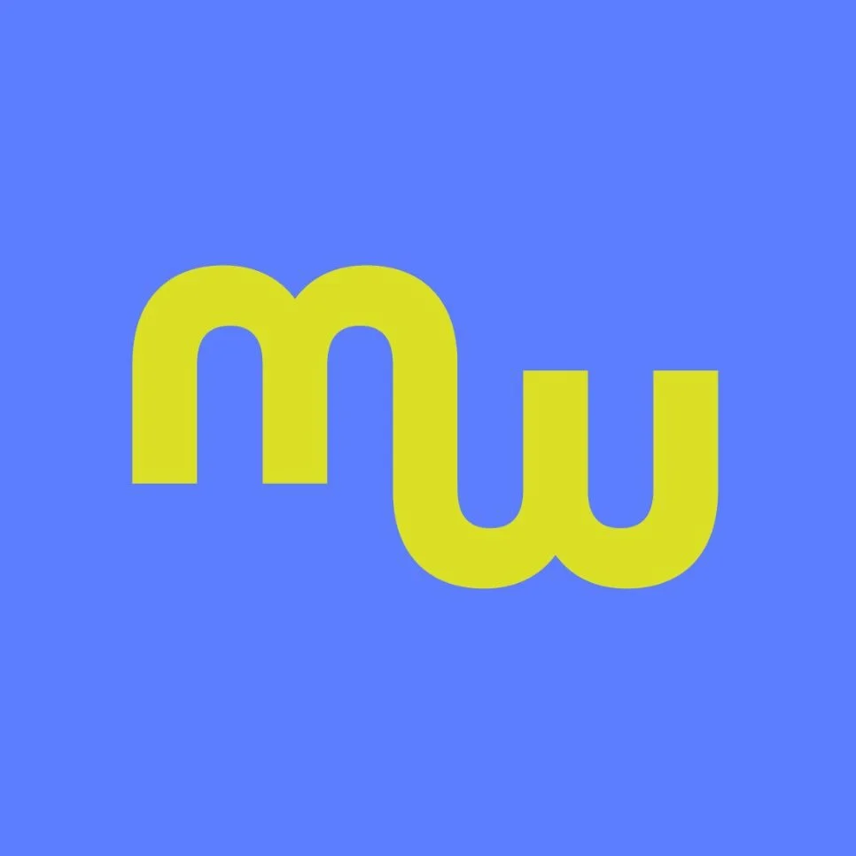
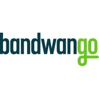
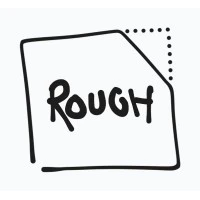
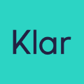
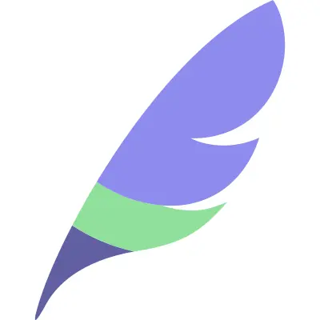
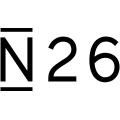

Simon Frost - Product Engineer

Mexico City, Mexico

Fullstack frontend leaning engineer. Over 10 years helping startups with unclear specifications and tight deadlines, to large corporations where clear communication and process was key. Personal highlights were taking Mexican neobank Klar from 0 to 1 with web and mobile apps, as well as building aerospace microsatellite startup Planet's image management dashboard.
Work Experience
Mellow Fit - Social Fitness Mobile App
- April 2025 - Present
- Product Engineer - React Native, Expo, Nativewind, React Native Reusables, Supabase, Vercel
Community focused exercise mobile app that was born from a whatsapp group chat. Cross platform iOS and Android.
Bandwango - Tourism Marketing App
- January 2025 - April 2025 (4 months)
- Frontend Engineer - Tailwind, Alpine.js, Cursor, Builder.io, Flux UI, PHP, Laravel, Figma
Marketing application to boost tourism by gamifying local activities. Created pixel perfect frontend code from designs heavily influenced by an AI workflow with Cursor and Builder.io (Figma export plugin).
Rough.app - Cursor for Product
- May 2023 - January 2024 (9 months)
- UX Engineer - Svelte, Zod, Yjs, Tldraw
Product planning tool that recommends feature 'pitches' via a vector database of user insights. Dogfooded the application by performing user testing in New Zealand and San Francisco and improving UX through feature and design adjustments.
Slowmad.app - Travel optimization prototype
- March 2023 - May 2023 (3 months)
- Product Engineer - React, Next.js, Tailwind, Supabase, Vercel
Proof of concept chatbot integration to reduce travel impact. Presented at local JavaScript meetup 'AI APIs' highlighting the functionality and challenges of integrating chatbots.
Relocated from Berlin to Mexico City
- November 2022 - March 2023 (5 months)
Extended break while I uprooted my life of 10 years in Berlin to Mexico City to spend some time with family in New Zealand. Presented talk 'Design Workflows for the Naive Creative' as I explored AI design tools like Midjourney, Cursor, v0, and Magic Patterns. Helped coordinate co-working space Lean Canvas, and JavaScript meetup.
Klar - Mexican Neobank focused on credit
- May 2019 - November 2022 (3 years 7 months)
- Web Lead Engineer - React, Redux, MUI, Figma, Squarespace, Webflow, GTM
- Senior Mobile Engineer - Flutter, Dart, Bloc, Fastlane, Firebase, GitHub Actions, Figma
I was employee #2 who laid the technical foundations for the web platform, then shipped key credit features on the mobile app. I worked directly with the CTO during series A, B, and C fundraising rounds and helped build the team by interviewing, pair programming, reviewing code, and onboarding new team members.
Mobile features included overdraft, bullet loans, installment loans, and tiered KYC (Know Your Customer). Web features included a customer service portal, signup, blog, and marketing pages.
Feather (freelance) - Insurance platform for expats
- November 2018 - January 2019 (3 months)
- Senior Frontend Engineer - React, Redux, Typescript, CSS Modules, Create React App, Zeplin
Feather is an insurance platform for expats. Features included account creation and management, and a rewards section.
SAP (freelance) - Enterprise software company
- April 2018 - October 2018 (6 months)
- Senior Frontend Engineer - Vue, Typescript, Styled Components, AWS, Invision
SAP is an enterprise software company. Created universal identification system prototype. Features included account management and linking.
Planet (freelance) - Aerospace Microsatellites
- Feb 2017 - Nov 2017 (9 months)
- Senior Frontend Engineer - React, Redux, Javascript, Webpack, MUI
Built the admin tool that managed daily imagery. Features included image access tooling, report viewing and generation, and two factor authentication.
N26 - European Neobank
- Feb 2016 - Nov 2016 (9 months)
- Frontend Engineer - Backbone.js, Javascript, SASS, CSS, Gulp, Zeplin
Built the main banking web application in a cross functional team. Features included overdraft, premium and express card ordering, and migration to the newly licensed bank.
Blacklane - Limosuine Service Provider
- Oct 2014 - Feb 2016 (1 year 4 months)
- Frontend Engineer - AngularJS, Javascript, Ruby on Rails, Gulp, HAML, SASS, CSS
Named fastest growing startup in Germany in 2015 (Tech5). Built the limousine booking app. Features included corporate portal, booking form, ride listings, and ride ratings.
Verizon Connect - A transportation logistics app
- Feb 2012 - Feb 2014 (2 years)
- Full Stack Engineer - C#, SQL, PowerShell
Built the interface and backend for a traveling salesman problem solver. Features included a route templating system, routing algorithm optimizations, and manual route modification tooling.
Education and Interests
Formal Education
- Bachelor of Science in Computer Science
University of Canterbury, New Zealand - Scholarship - University of Canterbury
Human Interface and Technology Laboratory
Languages
- English - Native
- German - Intermediate (B1 Goethe-Institut)
- Spanish - Beginner
Community Building
- Meetups: Tacos y Tech Mexico City, Berlin Hack and Tell
- Talks: AI APIs, Design Workflows for the Naive Creative
- Lean Canvas Coworking Space (New Zealand)
Hobbies
- Music: Techno Production, DJing, Keys, Trumpet
- Sports: Hiking, Pickleball, Bouldering
- Recent Books: Effective Typescript, On Web Typography